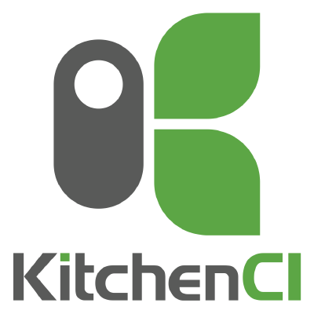

Introduction to Chef
Of all the bootcamp subjects to cover this one is the most frustrating to present properly in one hour. We will be able to cover "Why Chef exists," and "What Chef is," but not as much about "How Chef does it". That said, with the info here you will create a simple cookbook to configure a server.
What problems does Chef solve?
Chef is an Infrastructure Automation Frameworks, so that it's more than a tool, a language or a single product. The issues Chef addresses include:- How to specify what a system does as a description of state, instead of an aggregation of Bash/Perl/Python scripts.
- How to maintain many systems over time in a consistent, repeatable manner (where 'many' is anywhere between 1 and 250,000)
- How to assure that machines in identical roles behave the same in different environments, e.g. between dev, staging and production.
- How to verify and test your changes before touching anything in your live infrastructure.
Chef is a product from Chef
- Chef will install and configure software for your server (or VM of a server) - or even your laptop if you wanted.
- Chef is a Ruby DSL (domain-specific languate). Knowing Ruby is helpful but not required.
- Almost everything from Chef is open source. Including the community
cookbooks Chef maintains. - You write
recipes which are stored in cookbooks. Aknife does most of the work. (LOTS of cooking-related names.) - It is assumed you are using version-control with Chef, generally Git. Git is not required, but some tools in the Chef ecosystem will actually try and execute Git commands.
- Chef and its ecosystem of tools are advancing at a pace I've rarely seen in a tool. It is *hard* to keep to up date (and it's my part of my job).
- Wanna learn how to do something in a Chef cookbook? Cookbooks in the Chef Supermarket have examples of just about everything. Don't reinvent the wheel.
All the best practices of software development are available
The Ruby community is excellent at the practice of TDD (Test Driven Development). This has, thankfully, carried over to the Chef community, which has developed a suite of testing tools. These tools may add some time to your development initially, but their use pays off quickly, and they help increase both your velocity and stability in the long run.
- Dependency management - Berkshelf
- Code linting - Foodcritic and Rubocop
- Unit Testing - ChefSpec
- Integration Testing - Test Kitchen
- All these tools are so useful, Chef bundled them together into the Chef DK.
- Automation of linting, unit testing and interation testing after a code check in can be done in Countinuous Integration tools like Jenkins, just like building other software projects
- Successful completion of the above steps within your CI server would indicate a working cookbook change and your CI server can then publish the change to the Chef server for managed machines to pull down the update and apply it.
Getting started
LearnChef has well-crafted tutorials based on your prefered client OS, as well as numerous other webinars and tutorials. The site provisions a virtual machine for you during the guided tours. Follow the steps as described and you'll accomplish more in an hour than you'd expect!
Chef Server/Client
All of the configuration of your node is done by the Chef Client. That client (sometimes called an agent) processes a runlist of cookbooks, evaluates them based on the node's attributes, and then fixes any resources on the node that aren't yet matching the cookbook description.
The Chef Server stores the cookbooks and node information for Chef Clients. The Chef Client's interacts with the Chef Server over a REST API, and when you need to update cookbooks or other site information you use that API too, through tools like knife or the server's web Manage UI.
Whether you are using knife or the Chef Server's Manage UI, they will end up showing you the same information as gathered from the Server via those REST API requests. In some mature Chef environments users will not even have the Chef Manage UI installed on their Chef Server and instead they just use knife commands to request the information they need to know about their Chef managed nodes.
Do not reinvent the wheel
Now that we've covered that - here's the secret to Chef. It's all been done before!!! In the same way that Java has Maven, Ruby has gems or Node has npm for getting libraries people have already created - Chef has community cookbooks. They're open source - use them *and* learn from them.
Need Java? Use the community cookbook!
Need Tomcat? Use the community cookbook!
Need MongoDB? Use the community cookbook!
For a generic install of MongoDB using the community cookbook it is two lines of code added to your cookbook.
# in metadata.rb file
depends 'mongodb'
# in default.rb file
include_recipe 'mongodb'
Do not reinvent the wheel (unless you have to)
The community cookbooks are robust and often, but not always, support a wide range of configuration options (like host name, app install directory).
BUT - sometimes (read: often) the community cookbook just isn't right. Go ahead and roll your own. Spin up a base Vagrant VM. Run some commands to install your software just the way you need. Then use those commands as the model for writing your cookbook with Chef resources, such as package, file, and service. Now you can reproduce your app install as many times as needed. OR - contribute a change back to the community cookbook via a GitHub Pull Request. We know how to do that.
Create our first cookbook
Generating your first cookbook starts with the chef generate cookbook <your_cookbook_name> command.
This will give you a directory structure with all files necessary stubbed out. Let's just dig in to the recipes/default.rb file and use it to install Apache 2.
# in recipes/default.rb
package 'apache2' do
action :install
end
Test Kitchen

Very good. Now to test it. A few years ago, you'd approach testing like this: a) have a Chef Server handy, b) upload the cookbook to the server, c) install the chef-client on a Vagrant VM, d) register the Vagrant VM with the Chef Server, e) converge the node, and f) verify that your cookbook worked. Sounds like a pain in the butt and it was. With some Vagrant plugins the process was bearable, but still clunky.
But Flether Nichol decided we should have a better experience and instead created Test Kitchen. Similar to the joy that Mitchell Hashimoto delivered by putting VM settings in a Vagrantfile, Fletcher took Configuration Management testing to the next step and now we create .kitchen.yml files to describe our tests.
To test our cookbook, we'll run kitchen converge. It'll spin up your desired machine with your desired driver (Vagrant, Docker, AWS, OpenStack, etc), fake out a Chef Server with Chef Zero (or use a real Chef Server if that's your thing), and do a Chef client run of your cookbook.
When that completes (barring any errors in your cookbook), test the changes with kitchen verify. Or you can log in to the VM and check things out manually (kitchen login). All of which is driven by the data in your .kitchen.yml file.
Chefs to follow on Twitter
Podcasts to listen to
 Food Fight Show
Food Fight Show
 The Ship Show
The Ship Show
 Arrested DevOps
Arrested DevOps
 Ops All The Things!
Ops All The Things!
Workout
We are going to complete the following actions
- Review the example cookbook which you checked out during the Git session.
- Edit the
recipes/default.rbfile to install Apache 2 using theapache2package. - Converge the node with Test Kitchen
kitchen converge. Note the output of thechef-clientrun. - Browse to the VM in your browser: http://localhost:8080.
- Connect to the VM via SSH (
kitchen login) and then stop the Apache server from runningsudo service apache2 stopand logout. Reload the webpage (boo, nothing there). - Run
kitchen verify. Does the test pass? - Run
kitchen convergeagain. How is the output fromchef-clientdifferent this time? - Run
kitchen verifyagain. Does the test pass now? - Feel free to move on to more Chef topics with Chef in Practice